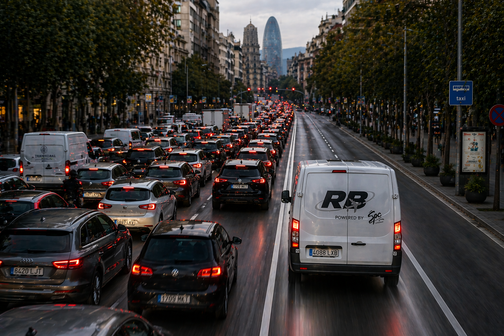

TRANSPORTE SANITARIO
FARMACIA Y HOSPITALES
Distribución farmacéutica y hospitalaria.
Recogidas y entregas de productos farmacéuticos y suministros sanitarios para farmacias, hospitales y centros de salud, con actividad en Barcelona y Girona.
TRANSPORTE · LOGÍSTICA · DISTRIBUCIÓN
En Ramura Corporate ofrecemos soluciones de transporte directo, distribución y logística especializada, con servicios adaptados a las necesidades de cada cliente en toda España.

01 / ESPECIALIDADES
Conocemos las particularidades de los sectores que necesitan precisión, coordinación y confianza en cada recogida y entrega.
Recogidas y entregas de productos farmacéuticos y suministros sanitarios para farmacias, hospitales y centros de salud, con actividad en Barcelona y Girona.
Recogida y entrega de mercancía en terminales de carga, coordinación con agentes de handling, accesos, documentación e incidencias operativas.
02 / SOLUCIONES
Desde una entrega de fábrica a fábrica hasta un envío nacional mediante operadores colaboradores.
Recogida y entrega puerta a puerta, con transporte dedicado según el origen, el destino y el tipo de mercancía.
DIRECTO · NACIONALServicios de reparto y distribución de paquetería para empresas, operadores de transporte y clientes profesionales.
REPARTO · RUTASRecogida de paquetes y gestión del envío al destino a través de empresas colaboradoras de transporte.
RECOGIDA · COLABORADORES03 / UNA FORMA DE TRABAJAR
Desde la recogida hasta la entrega, estudiamos cada servicio para definir una solución adecuada a la mercancía, los plazos y la operativa del cliente.
Explorar opciones de transporte ↗Origen, destino, mercancía y particularidades.
Transporte dedicado, distribución o red colaboradora.
Planificación y comunicación para cada servicio.
04 / CÓMO PODEMOS AYUDARTE
Descubre cómo puede organizarse un servicio según el tipo de mercancía y el destino.
Selecciona el tipo de servicio y un destino para conocer las distintas modalidades de transporte.
Recogida en origen, transporte dedicado y entrega directa en destino.
Información orientativa. Esta herramienta no solicita transportes ni calcula presupuestos.
RAMURA CORPORATE
Soluciones flexibles de transporte, distribución especializada y logística para responder a las necesidades de cada operación.
Conoce nuestros servicios ↗